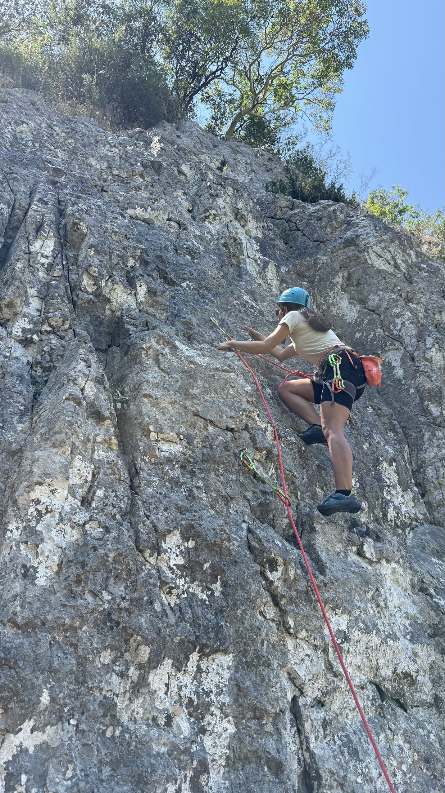
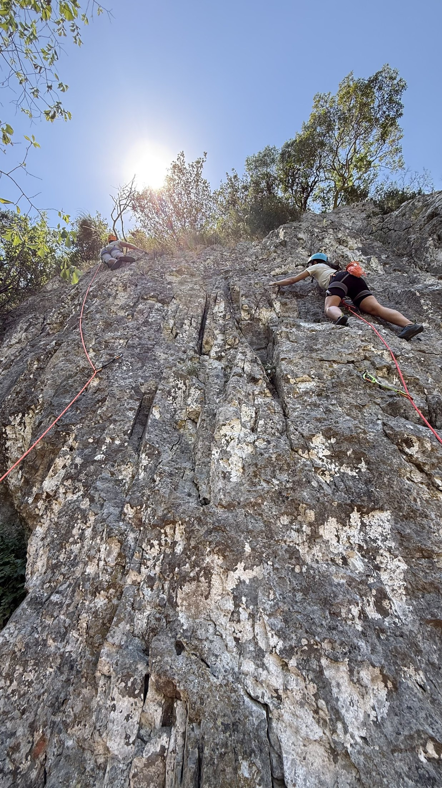

1 Temmuz 2026 İple İniş İstasyonu Eğitim Raporu
Temel hedef: İple iniş için emniyetli istasyon kurmak, ip inişini gerçekleştirmek ve istasyon toplamak
Kritik Noktalar
- Güvenliği en yüksek seviyede tutmak için mutlaka iki emniyet noktası kullanılmalıdır.
- İki emniyet noktasından prusik (çift balıkçı düğümlü ip) ya da halkasal ip (perlon gibi) kullanılan sistemlerde iki emniyetin de iş görmesi (yedekli olması) için düğüm ya da loop (halka) atılmalıdır.
- İnilecek ipin iki ucu mutlaka ip sonu düğümü ile birleştirilelidir.
- Gruptaki en tecrübeli kişi lider olmalı ve en son inmelidir (tecrübe seviyeleri eşit olsa dahi bir lider seçilmelidir).
İstasyon Çeşitleri
- Ballıkayalar'daki gibi boltla 2 emniyet noktalı ip inişi için tasarlanmış hazır istasyonun bulunduğu yerlerde iniş yapılacak ip direkt 2 noktadan geçirilerek kullanılabilir. Böylece yukarıda eşya bırakılmadan ip inişi gerçekleştirilebilir.
Doğal İstasyonlar
- Kum saati: Girişi ve çıkışından ip geçirilebilen kaya üzerindeki 2 delikli doğal yapı.
- Ağaç kökü: Tek istasyonun emniyetli olabileceği istisnai bir örnek. Bitkinin sabitliğinden ve geçirilen ipin bitkinin üzerinden çıkmayacağından emin olunmalı (yani boyu yeterince uzun olmalı).
Yapay İstasyonlar
- Sikke: Bir ucu halkalı, diğer ucu görece sivri metal iki malzemenin çekiçle kayaya çakılmasıyla kurulur. Çakıldıktan sonra bunlar emniyet noktası görevi görür. DİKKAT: Sikke herhangi bir yere çakılmaz. Kaya yarığına çakılmalıdır ve çakılmadan önce kayaya vurulmalı, çıkan ses dikkate alınmalı; altı/içi boş bir yere çakılmamalıdır. Çoğu zaman iple iniş yapılacak yerde biri daha önce sikke çakmıştır.
2 emniyet noktası elde ettikten sonraki aşamalar:
- İp inişi (rapel) öncesinde iki emniyet noktasına karabinalar takılır.
2. İstasyonu Eşitleme ve Sabitleme
- Perlonu Geçir: Geniş bir perlon bandı (sling) her iki karabinadan geçir.
- Master Point Oluştur: Perlonun alt ortasını aşağıya (iniş yönüne) doğru çek. İki şeridi birden yakalayarak çift kat sekizli düğümü at. Böylece yükü iki noktaya eşit dağıtan, sabit bir Ana Göz (Master Point) elde edersin. VEYA şeritlerden biri ile loop oluşturarak diğer şeridin yanına getir.
- Karabina Tak: Bu ana göze VEYA loop içerisine bir adet kilitli karabina yerleştir.
2. İniş İpini Hazırlama
- Düğümle: İpin her iki ucunu mutlaka bir emniyet düğümü (kör düğüm) ile birleştir.
- Ortala: İniş ipinin tam ortasını bul, istasyondaki kilitli karabinadan geçir ve karabinayı kilitle.
- At: İpi aşağıya, iniş rotasına doğru birkaç küçük parti halinde (tek seferde değil) fırlat. İplerin aşağıya ulaştığından emin ol.
3. İniş Aletini Takma
- ATC'yi Bağla: Kemerini giy ve ana göbek halkasındaki kilitli karabinaya iniş aletini (ATC) yerleştir.
- İpleri Geçir: Her iki iniş ipini birden ATC'den ve karabina içerisinden geçirip karabinayı kilitle.
4. Prusik (Ototok) Sistemini Kurma
- Bacak Halkasına Karabina: Emniyet kemerinin bacak halkasına bir kilitli karabina tak.
- Prusik Düğümü At: Yardımcı ipini (cord) al. İniş ipinin her iki şeridini birden kapsayacak şekilde, içerisinden en az 3 kere geçirerek klasik Prusik Düğümü oluştur.
- Karabinaya Bağla: Prusik düğümünün ucunu bacak halkasındaki bu ayrı karabinaya tak ve kilitle. (Böylece ATC yukarıda, prusik ise bacak halkasında aşağıda kalır; birbirlerine çarpmazlar).
- Kontrol: Prusiği elinle aşağı çekerek ipi sıkıca ısırdığından ve yukarı ittiğinde rahatça kaydığından emin ol.
5. İniş
- Son Kontrol: İstasyon düğümünü, perlonları, tüm kilitli karabinaları ve kemer tokalarını gözle ve elle kontrol et.
- İniş: Vücut ağırlığını hafifçe sisteme verip çalıştığını test et Bir elinle prusik düğümünü gevşeterek, diğer elinle alt ipi kontrol ederek emniyetli şekilde inişe geç.
Son inen kişi ve ekspres toplama:
Ekspresleri yukarda bırakamayız çünkü pahalı. Bunun yerine lider -son inen- ekspresleri çıkartıp pursik ipiyle -çünkü ucuz ve yukarıda bırakılabilir- istasyon kurar. 2 adet Prusik ipi bu 2 Emniyet noktasından geçirilir ve balıkçı düğümleri atılarak loop oluşturulur. İniş ipi ardından bu prusiklerin içerisinden geçirilir. Lider inişini gerçekleştirdikten sonra iniş ipinin ucundakidüğümleri çözer ve ipil aşağıya çeker.
Kurulu istasyonda inme hazırlığı:
https://youtu.be/4OBQDUnf9I4?si=CklPClNE_2D1kDoy
https://youtu.be/7U6tdEevJgs?si=H9WxJBmXn38lSveF
İp inişinde bol şans, yukarıda eşya unutmadığınıza ve kask taktığınıza emin olun.
Pratik ve Spor Tırmanış
İple inişi öğrendikten ve pratik yaptıktan sonra Ballıkayalar'ın farklı bir bölümüne geçtik ve 3 rota spor tırmanış yaptık.

